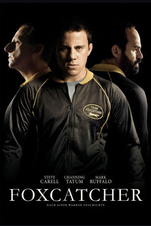

#6975 Foxcatcher
Auszeichnungen: für 5 Oscars nominiert
 
 IMDB-Wertung: 7.0 / 10
IMDB-Wertung: 7.0 / 10  Tomatometer: 88
Tomatometer: 88  Metascore: 0
Metascore: 0 
Der Ringer Mark Schultz, der 1984 die olympische Goldmedaille gewonnen hat, ist gefangen in einem Kreislauf aus täglicher Trainingsroutine und gelegentlichen Ansprachen, die er hält. Er hat den Höhepunkt seiner Karriere hinter sich, als er den sportbegeisterten Multimillionär John du Pont trifft. Dieser lädt den Sportler ein, an den Vorbereitungen des Trainings für die Olympischen Spiele 1988 teilzunehmen, die in Seoul stattfinden. Schultz nimmt das Angebot an und zieht auf du Ponts Farm, wo das Team Foxcatcher trainiert. Dort wird er vom exzentrischen du Pont gleichermaßen in Luxus gehüllt wie zu unaufhörlichem Training getrieben. Nach mehreren vergeblichen Versuchen gelingt es Schultz schließlich, auch seinen Bruder und Mentor Dave zu überreden, dem Team beizutreten. Als jedoch der Druck auf alle Beteiligten in Seoul immer weiter zunimmt, drohen sich die aufgebauten Spannungen in einer Katastrophe zu entladen...
Jahr: 2014
Dauer: 134 Minuten
FSK: 12
Land: USA Studio: Sony Pictures ClassicsTonspuren: DTS - ,
Untertitel: Deutsch,
Auflösung: 1080p (1920x1040) Größe: 8110 MB
Genre: Thriller, Drama, Sport, Biographie
Regisseur: Bennett Miller
Drehbuch: E. Max Frye
Soundtrack:
Darsteller:
 Steve Carell als John du Pont
Steve Carell als John du Pont Channing Tatum als Mark Schultz
Channing Tatum als Mark Schultz Mark Ruffalo als David Schultz
Mark Ruffalo als David Schultz Sienna Miller als Nancy Schultz
Sienna Miller als Nancy Schultz Vanessa Redgrave als Jean du Pont
Vanessa Redgrave als Jean du Pont Anthony Michael Hall als Jack
Anthony Michael Hall als Jack Guy Boyd als Henry Beck
Guy Boyd als Henry Beck Brett Rice als Fred Cole
Brett Rice als Fred Cole- Jackson Frazer als Alexander Schultz
 Samara Lee als Danielle Schultz
Samara Lee als Danielle Schultz- Francis J. Murphy III als Wayne Kendall
 Lee Perkins als Corporal
Lee Perkins als Corporal- Daniel Hilt als Roberto Garcia
- Corey Jantzen als Foxcatcher Wrestler #4
- Mark Schultz als Weigh-in Official #1
- Richard E. Chapla Jr. als Broiler Hut Cashier
- Bill Ehrin als Broiler Hut Patron
 Dan Anders als General
Dan Anders als General Alan Oppenheimer als Du Pont Dynasty Narrator
Alan Oppenheimer als Du Pont Dynasty Narrator- Gabriel Fiorindo Bellotti als Russian Wrestler , uncredited
 Troy Bogdan als Airport / Fan / Usher , uncredited
Troy Bogdan als Airport / Fan / Usher , uncredited- Brian Briggs als World Wrestling Organization / event staff , uncredited
- Jake Brinskele als Wrestler , uncredited
- Gregory Bromfield als Olympics Crowd Goer , uncredited
- Patrick Cannon als Collegiate Wrestler , uncredited
- Patrick Conner als Banquet Patron / Olympics Judge , uncredited
 Mark Falvo als Olympic Judge / USA National Wrestling VIP / International Wrestling Judge / MMA Spectator , uncredited
Mark Falvo als Olympic Judge / USA National Wrestling VIP / International Wrestling Judge / MMA Spectator , uncredited Joe Fishel als UFC / MMA Trainer , uncredited
Joe Fishel als UFC / MMA Trainer , uncredited- Stephanie Garvin als Gala Guest , uncredited
- Krista Graham als Candy , uncredited
 Vito Grassi als Trainer , uncredited
Vito Grassi als Trainer , uncredited- Ryan Gunnarson als USA wrestler , uncredited
- Shannon M. Hart als Dignitary , uncredited
 John W. Iwanonkiw als Russian Fighter Manager , uncredited
John W. Iwanonkiw als Russian Fighter Manager , uncredited- Jesse Jantzen als Jesse , uncredited
- Sam Juergens als Wrestling Coach , uncredited
 William Kania als Wealthy Conservative Donor , uncredited
William Kania als Wealthy Conservative Donor , uncredited- Kris Leiter als Olympic Dignitary , uncredited
- Brock Lesnar als Wrestler in Background at Weigh-In , uncredited
 Laurie Mann als Seoul Olympics Spectator , uncredited
Laurie Mann als Seoul Olympics Spectator , uncredited David Dale McCue als Newtown Township Police Officer , uncredited
David Dale McCue als Newtown Township Police Officer , uncredited Tiffany Sander McKenzie als Gala Guest , uncredited
Tiffany Sander McKenzie als Gala Guest , uncredited F. Robert McMurray als Dinner Guest , uncredited
F. Robert McMurray als Dinner Guest , uncredited- Terri Middleton als Diner , uncredited
- Susan Moran als Fundraiser Guest , uncredited
 Phil Nardozzi als Dinner Guest , uncredited
Phil Nardozzi als Dinner Guest , uncredited- Michael Paradise als Usa Wrestler , uncredited
- Christian J. Parkinson als Wrestler , uncredited
- Jess Paul als Stadium Audience Member , uncredited
- Edward Pfeifer als Wrestling VIP / Spectator , uncredited
Datei: X:\2014(A-F)\Foxcatcher (2014, FSK12, 1920x1040).mkv seit 15.09.2017
Festplatte: HD 2013(I-Z)-2014(A-Z)
 Es gibt insgesamt 119 Filme in der Gruppe '2014(A-F)'
Es gibt insgesamt 119 Filme in der Gruppe '2014(A-F)'